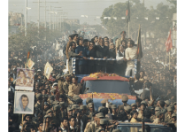

তিনি উক্ত ভাষণ বিকেল ২টা ৪৫ মিনিটে শুরু করে বিকেল ৩টা ৩ মিনিটে শেষ করেন। উক্ত ভাষণ ১৮ মিনিট স্থায়ী হয়। [১] এই ভাষণে তিনি তৎকালীন পূর্ব পাকিস্তানের (বর্তমানে বাংলাদেশ) বাঙালিদেরকে স্বাধীনতা সংগ্রামের জন্য প্রস্তুত হওয়ার আহ্বান জানান। এই ভাষণের একটি লিখিত ভাষ্য অচিরেই বিতরণ করা হয়েছিল। এটি তাজউদ্দীন আহমদ কর্তৃক কিছু পরিমার্জিত হয়েছিল। পরিমার্জনার মূল উদ্দেশ্য ছিল সামরিক আইন প্রত্যাহার এবং নির্বাচিত জনপ্রতিনিধিদের কাছে ক্ষমতা হস্তান্তরের দাবীটির ওপর গুরুত্ব আরোপ করা ১২টি ভাষায় ভাষণটি অনুবাদ করা হয়
নিউজউইক ম্যাগাজিন জাতির পিতা বঙ্গবন্ধু শেখ মুজিবুর রহমানকে রাজনীতির কবি হিসেবে স্বীকৃতি দেয়। ২০১৭ সালের ৩০ শে অক্টোবর ইউনেস্কো এই ভাষণকে ঐতিহাসিক দলিল হিসেবে স্বীকৃতি দেয় ১৯৭০ খ্রিষ্টাব্দে আওয়ামী লীগ পাকিস্তানের জাতীয় পরিষদ নির্বাচনে নিরঙ্কুশ সংখ্যাগরিষ ্ঠতা অর্জন করে। কিন্তু পাকিস্তানের সামরিক শাসকগোষ্ঠী এই দলের কাছে ক্ষমতা হস্তান্তরে বিলম্ব করতে শুরু করে। প্রকৃতপক্ষে তাদের উদ্দেশ্য ছিল, যে-কোনভাবে ক্ষমতা পশ্চিম পাকিস্তানী রাজনীতিবিদদের হাতে কুক্ষিগত করে রাখা। এই পরিস্থিতিতে পাকিস্তানের প্রেসিডেন্ট জেনারেল ইয়াহিয়া খান ৩রা মার্চ জাতীয় পরিষদ অধিবেশন আহ্বান করেন। কিন্তু অপ্রত্যাশিতভাবে ১লা মার্চ এই অধিবেশন অনির্দিষ্টকালের জন্য মুলতবি ঘোষণা করেন। এই সংবাদে পূর্ব পাকিস্তানের জনগণ বিক্ষোভে ফেটে পড়ে। আওয়ামী লীগ প্রধান শেখ মুজিবুর রহমানের নেতৃত্বে ২রা মার্চ ঢাকায় এবং ৩রা মার্চ সারাদেশে একযোগে হরতাল পালিত হয়
